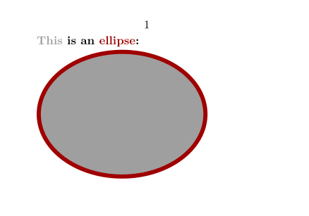
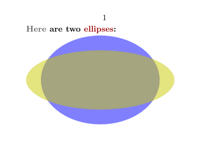

Contents
The basics
MetaPost only supports the RGB color space, although with the help of MetaFun you can face transparency and CMYK colors. This article describes the use of colors in MetaPost and MetaFun.
Colors are defined as vectors with three components: a red, green and blue one. Like pens, colors have a with... command:
withcolor (.4,.5,.6)
You can define color variables like so:
color darkred ; darkred := (.625,0,0) ; % use the color withcolor darkred % actually, red is already defined, so this works: withcolor .625red
Because for MetaPost colors are just vectors, you can manipulate them like you would manipulate points. This is a color halfway between red and green:
withcolor .5[red,green]
Using colors defined in TeX
In ConTeXt you define colors with \definecolor. Instead of defining a color a second time in MetaPost, you can use the \MPcolor{colorname} command.
-
\setuppapersize[A8,landscape] \definecolor [darkred] [r=.625] % a RGB color \definecolor [darkgray][s=.625] % a gray scale \startuseMPgraphic{color demo} pickup pencircle scaled 1mm ; path p ; p := fullcircle xscaled 4cm yscaled 3cm ; fill p withcolor \MPcolor{darkgray} ; draw p withcolor \MPcolor{darkred} ; \stopuseMPgraphic \starttext \bold{\color[darkgray]{This} is an \color[darkred]{ellipse}:}\\ \useMPgraphic{color demo} \stoptext
- 
Transparent colors
You can use transparent colors with the transparent(method, factor, color) function. For example:
-
\setuppapersize[A8,landscape] \definecolor[highlight][r=0.8,g=0.8,b=0] \startuseMPgraphic{color demo} pickup pencircle scaled 1mm ; path p ; p:= fullcircle xscaled 4cm yscaled 3cm ; fill p withcolor transparent(1,0.5,blue); path pp ; pp:= fullcircle xscaled 5cm yscaled 2cm ; fill pp withcolor transparent(1,0.5,\MPcolor{highlight}); \stopuseMPgraphic \starttext \bold{\color[darkgray]{Here} are two \color[darkred]{ellipses}:}\\ \useMPgraphic{color demo} \stoptext
- 
The available transparency methods are the twelve methods supported by PDF specification:
- 1. normal
- 2. multiply
- 3. screen
- 4. overlay
- 5. softlight
- 6. hardlight
- 7. colordodge
- 8. colorburn
- 9. darken
- 10. lighten
- 11. difference
- 12. exclusion
Troubleshooting transparency
If you see black colors rather than transparent ones, then you probably hit the 'missing specials' problem. This problem was around in 2006; people may not encounter it anymore, but the solution is mentioned here anyway. From the mailing list:
This all sounds like the 'missing specials' problem that is caused by conflicting -progname= arguments when using the web2c version of MetaPost. Make sure you do not have conflicting memory settings for both main_memory.mpost as well as main_memory.metafun The best is to remove all trace of '.mpost' and '.metafun' memory settings from your texmf.cnf, but at least make sure all the '.mpost' and 'metafun' values are the same . Then regenerate metafun using texexec --make, and all should be well again.
The settings will be in tex/texmf/web2c/texmf.cnf or tex/texmf-context/web2c/context.cnf inside your ConTeXt tree. If you are using ConTeXt from the Debian/Ubuntu distribution of TeX, instead of via the recommended ConTeXt Standalone, you need to edit
/etc/texmf/texmf.d/95NonPath.cnf, instead. The part you need to edit will look something like this.
main_memory = 1000000 % words of inimemory available; also applies to inimf&mp main_memory.context = 1500000 main_memory.mpost = 1500000
- Comment out the .mpost line (MetaFun uses the main_memory value of 1000000; the difference in values is the cause of the problem).
-
(If you are not using the standalone, regenerate your TeX with
sudo update-texmf) -
Lastly, regenerate the MetaFun format with
texexec --make. Transparency should work now.